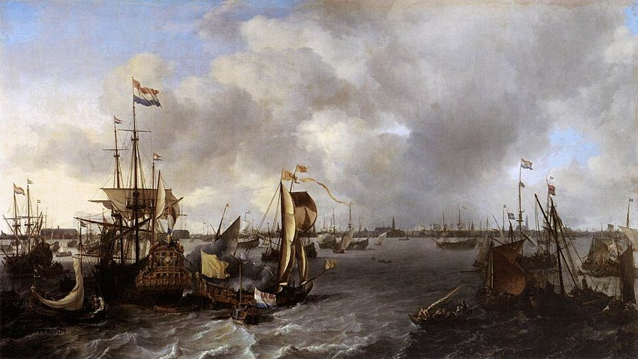

这一页在做什么
卷二最后两章，讲攒下的资本借给谁、用在哪儿。第 4 章讲利息：借钱借的其实是货物，利息跟着利润走，法律该怎样给它封顶。第 5 章给资本排座次：同样一笔钱，投在农业、制造业、批发、零售，投在国内贸易、对外贸易、替外国运货，哪种推动的本国劳动最多。读的时候抓两条线：这个座次是怎么算出来的，今天还算不算数；它怎样成了卷四「看不见的手」的前提。

他想证明什么
上一页讲节俭攒出资本，这两章接着问：攒下的资本借给谁、用在哪里最好？第 4 章是利息的专章，结论和页 06 一致：资本越多，利润越低，利息也越低；金银多了，利息不会因此下降。他还给法定利率上限定了个尺度。第 5 章才是正题。斯密先把资本的用途分成四种：取得原产物、加工制造、批发运输、零售，四种都少不了。然后按「同量资本推动多少本国的生产性劳动」排座次：农业第一，因为自然也和人一起干活；批发贸易里，国内贸易第一，对外贸易其次，贩运贸易最末。由此得出两条政策：资本不够的国家先投农业，别急着办制造业；政府不要用奖励把资本引向远方的贸易。章末他承认，欧洲的资本偏偏不往农业去，原因留到卷三、卷四再讲。
读法：这一页没有标「先读」的节。有空就读 §4 的屠夫和零售商、§6 的三种贸易、§7 的最后两段；§1、§2 的利息理论和 §5 的细节可以跳过。页 17 的看不见的手说「已经证明过」的那条排序，就在 §6。
第 5 章按「推动多少本国劳动」给资本排座次，说得很有把握，卷四又拿它当已经证明的前提。今天的经济学不这样算，见「今天怎么看」。
斯密落在哪：同量资本，投在农业推动的本国劳动最多，制造业次之，批发和零售再次；国内贸易一般胜过对外贸易，对外贸易胜过贩运贸易。所以政府不该把资本引向远方；贩运贸易看来是富裕的结果，不是原因。
分节地图
这一页是卷二第 4、5 章，本站切成 7 节。粗体是本站起的节名；「杨译里找」后面是杨译里这一节开头附近的小标题或第一句；灰色的英文是原文这一节开头的几个词。标「先读」的是最短读法。
- 借的是货物，不是钱贷出取息的资财是贷款人的资本，但可能是也可能不是借款人的资本THE stock which is lent at interest …借钱的人要的是钱能买到的货物，同几枚钱币可以接连充当好几笔贷款。论证不错但抽象，读过卷二第 2 章「流通的大轮子」就够了，可以跳过。第 5 段有一处见勘误。
- 利息为什么会下降利息随出贷资财数量的增长而下降As the quantity of stock to be …资本多了，利润降，利息跟着降。第 9–10 段反驳洛克等人，替休谟补一道算术题。结论一句话就够，可以跳过。
- 高利贷法：利率封顶定多高禁止收取利息是错误的，会增加高利贷的恶行In some countries the interest of money …禁止收息只会抬高利息；上限该略高于最可靠的借款人付的市场利率。第 15 段怕钱流到「浪费者和搞新计划的人」手里，后来被边沁抓住批评，见页 06。
- 资本的四种用途资本所推动的劳动和所增加的价值，因资本的用途不同而异THOUGH all capitals are destined for the …资本的四种用途和它们的座次。第 7 段替零售商说话，屠夫和整头牛最好懂；第 12 段「自然也和人一起劳动」是农业第一的理由，今天看站不住。
- 资本住在哪里农业和零售业中使用的资本必须留在国内The capitals employed in the agriculture and …哪种资本必须待在国内、出口商是不是本国人无所谓，细节多，可以跳过。只看第 21 段：斯密劝北美人别抵制英国货、别急着办制造业。
- 国内贸易、对外贸易、贩运贸易不同种类的批发贸易，雇用不同数量的生产性劳动，对年产物数量的增加也不同It is thus that the same capital …三种批发贸易按「补偿几份本国资本」排座次，第 27 段还算出 24 倍。卷四看不见的手的前提就在这里，留意这个算法本身。
- 贩运贸易是富裕的症状虽然当自然发展时，每一种都是有利的Each of those different branches of trade, …斯密转过来说，三种贸易自然发展时都有利；贩运贸易是富裕的症状。最后一段：欧洲的资本宁愿跑去亚洲美洲，也不改良身边的好地，原因留给卷三。
先用中文过一遍：这一页的概念
这一页用到的两个概念。讲的是概念本身；每块的「今天」说今天怎么看它。利息和法定利率上限见页 06 的利息和利润、法定利率上限。
§4资本的四种用途 four different ways of employing a capital
一笔资本能干的事，斯密说只有四种：从土地、矿山、渔场里取得原产物（农场主、矿主）；把原产物加工成能用的东西（工场主）；把东西从多的地方运到缺的地方（批发商）；把整批的东西拆成零星小份，卖给要用的人（零售商）。四种缺一不可：没有原产物就没有别的；没人零卖，穷工人就得一次买下整头牛，把做生意的本钱压在口粮上。这个分法今天还认得出来，大致对应农业、工业和服务业里的商业。分类本身没毛病，惹麻烦的是他接着排的座次：同量资本，农业推动的本国劳动最多，制造业次之，批发再次，零售最少。
今天：比较各行各业，看的是每份投入创造多少增加值、资本赚回多少，不看推动了多少人干活。高收入国家的农业只占约 1% 的增加值。
在这一页：第 2–7 段分类，第 8–12 段排座次，第 19 段推出资本不够时先投农业。
§6贩运贸易 the carrying trade
替别国运货的生意。斯密把批发贸易分三种：国内贸易，在本国一地买、另一地卖，比如把苏格兰的制造品运到伦敦，再把英格兰的谷物运回爱丁堡；对外消费贸易，买外国货回来给本国人用，比如拿英国货换葡萄牙的酒；贩运贸易，在两个外国之间倒腾，比如荷兰商人把波兰的谷物运到葡萄牙，再把葡萄牙的水果和酒运回波兰。他的算法是：每做一趟买卖，商人就让两头的生产者收回本钱、接着干，等于「补偿」了两份资本。国内贸易补偿两份本国资本，对外贸易一份本国、一份外国，贩运贸易两份都是外国的，本国只落下利润，用本国船时再加上船钱。
今天：和它最近的是转口贸易和国际航运。今天的经济学不按「补偿几份本国资本」给贸易排座次，见「今天怎么看」。
在这一页：第 24–31 段排座次，第 35 段说它是富裕的症状。页 17 的资本恋家也把它排在最后。
故事和背景
这一页里的故事和 18 世纪的东西，按在书里出现的顺序排。
§2洛克、劳、孟德斯鸠，和一道算术题
第 9 段，斯密点了三个大名：洛克、劳（就是后来在法国搞出密西西比泡沫的那位）、孟德斯鸠。他们和许多作家一样，以为发现美洲以后金银多了、变贱了，欧洲的利息才降下来。斯密说，这个看法休谟已经驳得很透（Cannan 注明是休谟 1752 年的《论利息》），他只补一道简单的算术。假设白银贬值一半，从前 50 镑能买的东西如今要 100 镑，那么从前 5 镑的利息，如今也该是 10 镑：利率还是一成，白银贬值本身压不低利率。要是利率真从一成降到五厘，就等于借一笔只值从前一半的本钱，付只值从前四分之一的利息。所以利率下降另有原因：资本多了，利润薄了。
§5别抵制英国货
第 21 段：北美殖民地富得这么快，主要原因是资本几乎全投在了农业上；要是美洲人「联合起来或用别的暴力」停止进口欧洲的制成品，把资本转去办自己的制造业，只会拖慢致富。这几句有所指。北美从 1760 年代起多次用抵制英国货来抗议征税，1774 年 10 月第一届大陆会议通过「大陆联盟」，12 月 1 日起禁止进口英国货。斯密没提的是，北美的烟草种植园（弗吉尼亚、马里兰）大量使用奴隶劳动。独立以后，美国第一任财政部长 Hamilton 在 1791 年的《关于制造业的报告》里，正面反驳「农业比制造业更有生产力」，主张扶植本国制造业；他提的补贴没有通过，关税建议次年大多被国会采纳。
§6九万六千大桶烟草和纽卡斯尔的运煤船
第 34 段：英国每年拿自己的货，在弗吉尼亚和马里兰换回约 9.6 万大桶烟草，本国大概只要 1.4 万桶，剩下 8.2 万桶得再卖到国外，否则做这些货的英国人就没活干。斯密拿它说明，最绕的对外贸易有时和最直接的一样必要。这门生意他再熟悉不过：他教书的格拉斯哥就靠它发家。烟叶运到克莱德河，再转卖到法国、荷兰等地，法国的烟草专卖是大主顾，做这行的格拉斯哥商人被称为「烟草大王」；1775 年美洲战争一打，生意就垮了。第 30 段还有个反常识的例子：纽卡斯尔到伦敦的运煤船，比英国全部贩运贸易用的船还多。船多船少看货有多笨重，不看贸易是哪一种。
原典：斯密的原话
这本书是公版书，下面整段放斯密的原文，配本站的白话译。灰字说它在杨译的哪里，最后一行是这段里今天容易读错的 18 世纪词。
§4没有屠夫，就得买整头牛
斯密替零售商说话，好懂又好玩，取第 7 段中间，略去一句算账的话。在杨译（4）分配下面那一段。
If there was no such trade as a butcher, for example, every man would be obliged to purchase a whole ox or a whole sheep at a time. This would generally be inconvenient to the rich, and much more so to the poor. If a poor workman was obliged to purchase a month’s or six months provisions at a time, a great part of the stock which he employs as a capital in the instruments of his trade, or in the furniture of his shop, and which yields him a revenue, he would be forced to place in that part of his stock which is reserved for immediate consumption, and which yields him no revenue. Nothing can be more convenient for such a person than to be able to purchase his subsistence from day to day, or even from hour to hour, as he wants it. He is thereby enabled to employ almost his whole stock as a capital. … The prejudices of some political writers against shopkeepers and tradesmen, are altogether without foundation. So far is it from being necessary, either to tax them, or to restrict their numbers, that they can never be multiplied so as to hurt the publick, though they may so as to hurt one another.
本站译：比如说，要是没有屠夫这一行，每个人都得一次买下一整头牛或一整只羊。这对富人一般就不方便，对穷人更不方便。一个穷工人要是不得不一次买下一个月、半年的口粮，那么他本来当作资本、投在干活的工具或店里的家什上、能给他带来收入的本钱，就有一大部分得挪到留着自己吃用、不带来收入的那部分里去。对这样的人来说，最方便的莫过于要吃的时候一天一天地买，甚至一个钟头一个钟头地买。这样他几乎能把全部本钱都当作资本来用。……某些政论家对店主和小商人的偏见，完全没有根据。根本用不着向他们征税、限制他们的人数；他们再多也不会多到伤害公众，虽然可能多到彼此伤害。
略去的那句说：工人用这些本钱多做的活、多赚的利润，远远抵得过零售商加在货上的那点利润。同一段后面还有一句：不是酒馆多了，老百姓才爱喝酒；是爱喝酒的风气另有来由，才养活了那么多酒馆。
- stock一个人的全部家当，一部分当资本，一部分留着自己吃用
- furniture of his shop店里的家什、设备
- tradesmen小商人、店铺老板，不是今天的「手艺人」
- publickpublic 的旧拼法，公众
§4自然也和人一起劳动
农业第一的理由，最能看出斯密身上的重农学派影子。取第 12 段中间。在杨译农场主的资本使用他的雇工和牲畜，在年产物上增加的价值比其他资本大得多下面。
In agriculture too nature labours along with man; and though her labour costs no expence, its produce has its value, as well as that of the most expensive workmen. The most important operations of agriculture seem intended, not so much to increase, though they do that too, as to direct the fertility of nature towards the production of the plants most profitable to man. A field overgrown with briars and brambles may frequently produce as great a quantity of vegetables as the best cultivated vineyard or corn field. Planting and tillage frequently regulate more than they animate the active fertility of nature; and after all their labour, a great part of the work always remains to be done by her. … This rent may be considered as the produce of those powers of nature, the use of which the landlord lends to the farmer. … It is the work of nature which remains after deducting or compensating every thing which can be regarded as the work of man. … In them nature does nothing; man does all
本站译：在农业里，自然也和人一起劳动；她的劳动不花一分钱，她的产物却和最贵的工人的产物一样有价值。农业里最要紧的那些活，看来与其说是要增加自然的生殖力（虽然也增加），不如说是把它引向种出对人最有利的那些植物。一块长满荆棘的地，常常也能长出和最好的葡萄园、麦田一样多的植物。种植和耕作，与其说是激发了自然那股活跃的生殖力，不如说常常只是在调节它；人干完了所有的活，还有一大部分总要留给自然去做。……这份地租可以看作那些自然力的产物，是地主把自然力借给农场主使用换来的。……它是扣除或补偿了一切可以算作人的工作以后，剩下的自然的工作。……在制造业里，自然什么也不干，全是人干的。
Ricardo 1817 年在论地租的注里反问：风和水推动机器，大气压和蒸汽推动发动机，制造业里自然不也在帮忙吗？Cannan 也在注里说，第 27 段「周转越快越好」的道理要是早些用上，农业第一的论证就站不住了。
- briars and brambles荆棘、野蔷薇这类带刺的灌木
- tillage耕地、翻土
- animate激发、使有生气
- corn field麦田、谷物地，不是玉米地
§7贩运贸易是症状，不是病因
全章最经得起时间的一句：别把结果当原因去补贴。取第 35 段的前半。在杨译交换所得的外国货物常常必须再出口这个小标题后面那一段。
When the capital stock of any country is increased to such a degree, that it cannot be all employed in supplying the consumption, and supporting the productive labour of that particular country, the surplus part of it naturally disgorges itself into the carrying trade, and is employed in performing the same offices to other countries. The carrying trade is the natural effect and symptom of great national wealth; but it does not seem to be the natural cause of it. Those statesmen who have been disposed to favour it with particular encouragements, seem to have mistaken the effect and symptom for the cause. Holland, in proportion to the extent of the land and the number of its inhabitants, by far the richest country in Europe, has, accordingly, the greatest share of the carrying trade of Europe.
本站译：一国的资本增加到本国的消费和本国的生产性劳动都用不完的地步，多出来的那部分自然会溢进贩运贸易，替别的国家干同样的事。贩运贸易是一国非常富裕的自然结果和症状，看来却不是它的自然原因。那些想给它特别奖励的政治家，似乎把结果和症状错当成了原因。荷兰按土地面积和人口算，是欧洲最富的国家，所以欧洲的贩运贸易它占得最多。
留意 does not seem、seem to have：斯密下的是有分寸的判断。他反对的是「特别奖励」，不是贩运贸易本身；前面第 32 段刚说过，三种贸易顺其自然发展时，都有利，也都必要。
- disgorges itself溢出、涌出，像水满了往外冒
- offices职能、服务，不是办公室
- encouragements奖励、补贴（卷四的「奖金」就是一种）
译本勘误
杨译这两章整体可靠。下面只收会把人读歪的两处。灰字是英文原文那一处的几个词；方框里是杨译的原句，在电子书里搜它。
§1monied interest 是放债人集团，不是「权益」术语
what is called the monied interest
译本：「它构成所谓货币的权益」
interest 在这里是「利益集团」：把资本借出去吃利息、自己不经营的那群人，今天会说金融利益集团。后半句的 landed、trading and manufacturing interests 也是集团：地主集团、工商集团。译成「权益」，读起来像一种法律上的权利。
§3projector 是搞新计划的人，不是「投机商」术语
lent to prodigals and projectors, who
译本：「落入浪费者和投机商之手」
projector 是发起新计划、新事业的人，今天近于「创业者」，18 世纪常带「空想家」的贬义。「投机商」容易读成炒买炒卖的人。斯密担心的是：利率封顶定得太高，只有肯冒大险的新事业肯出这个价。边沁的反驳也正落在这群人身上，见页 06。
今天怎么看
这两章的主要说法和今天的判断。每条标签判的是那条论点，五种标签的意思：
- 成立今天的经济学和证据支持这句话。
- 部分成立大方向对，细节或适用范围要改。
- 过时说的是 18 世纪的世界，当时也许对，今天的制度和技术已经变了。
- 被推翻后来的经济学或证据说明它错了。
- 有争议经济学界至今没有定论，两边各有代表性的研究。
金银多了只会让一切名义价格同比上涨，不会让利息下降
斯密跟着休谟说，利息由资本多少、利润高低决定。今天看，长期这一半是主流：钱多了，最后涨的是物价。短期不成立：今天的央行正是靠多放或少放钱来压低或抬高利率；Friedman 1968 年也说，这种压法只能维持一时。
§2 第 9–12 段法定利率上限应略高于最可靠的借款人付的市场利率，定得太高，钱就流到浪费者和搞新计划的人手里
斯密不反对上限，反对的是全面禁止和定得太低或太高。今天看，这道题还没吵完：上限挡得住掠夺性放贷，也会把高风险的借款人挤出正规市场。两边的研究见页 06 的法定利率上限。
§3 第 13–16 段同量资本，农业推动的本国劳动最多、增加的价值最大，因为自然也和人一起劳动
今天看，这条被推翻了。Ricardo 1817 年就反问，风、水、蒸汽在制造业里不也在干活？地租高，不因为自然慷慨，因为好地稀缺，见页 09 的级差地租。今天高收入国家农业只占约 1% 的增加值，照样吃得饱。
§4 第 8–12 段国内贸易推动的本国劳动一般比对外贸易多，对外贸易又比贩运贸易多，所以政府不该把资本引向远方
今天看，前一半不成立：一国的得失看资本赚回多少、换来的东西值多少，不看雇了多少本国人；拿本国货换更便宜的外国货，雇的人少了，国家照样更富。看不见的手借的正是这个前提，见页 17。后一半「别用奖励把资本推进某种贸易」今天仍站得住。
§6 第 24–31 段书里的说法：资本不够的国家，先把资本投在农业，致富最快，不该急着办制造业
- 书里
- 第 19–21 段，北美殖民地是例子。卷三把这叫财富的自然顺序，见页 14。
- 当时
- 北美地多人少，种地的回报确实高；斯密写这几段时，北美正在抵制英国货。
- 今天
- 两边各有代表。支持「先把农业搞上去」的：Gollin、Parente、Rogerson 2002 年认为，农业生产率太低，劳动力就离不开土地，工业化开始得晚、走得慢，这是今天穷国落后的一大原因。认为制造业是快车道的：Rodrik 2013 年用 118 个国家的数据发现，制造业的劳动生产率会自动向富国靠拢，差距每年缩小约 2% 到 3%，整个经济却不会，只因穷国干制造业的人太少。历史上美国也没照斯密的方子走：Hamilton 1791 年力主扶植制造业，次年国会采纳了他的大部分关税建议（关税保护的得失见页 17 的幼稚产业论）。核对于 2026-10。依据：Gollin, Parente & Rogerson, AER Papers & Proceedings, 2002；Rodrik, Quarterly Journal of Economics, 2013；Irwin 关于 Hamilton《关于制造业的报告》的论文。
- 另一边
- Rodrik 的结论后来也有人用别的数据质疑。两边其实有交集：先提高农业生产率，再让人转进制造业，正是今天讲「结构转型」的常见叙述。斯密错在理由（自然在干活），不一定错在次序。
本站的总体看法：这一页没有先读，只翻 §4 和 §7 也行。四种用途当分类读没问题；「推动多少本国劳动」的座次当思想史读，它是卷四看不见的手的地基，而这块地基今天不算数了。最值得带走的两句：零售商多了只会彼此吃亏，坑不了公众；贩运贸易是富裕的症状，别拿症状当病因去补贴。
精彩回顾
隔几周回来时看这里。想不起来，点节号回到那一节。
一句话：斯密给资本排座次：农业第一，国内贸易第一。分类留了下来，座次的算法今天不算数。
没有零售商，穷工人得一次买下半年口粮，做生意的本钱就压在了吃的上。零售商多了，只会彼此吃亏。
§4斯密说农业里自然和人一起劳动，所以农业资本最有生产力。Ricardo 反问：风、水、蒸汽在工厂里不也在干活吗？
§4苏格兰运伦敦补两份本国资本，英国换葡萄牙补一份，荷兰替波兰和葡萄牙运货补零份。看不见的手的前提就是这本账。
§6荷兰最富，所以贩运贸易最多。拿症状当病因、给它发奖励的政治家，弄反了因果。
§7